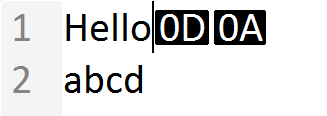

Unicode Text Editing
Unicode文字の入力は、テキストエディターにいくつかのユニークな問題をもたらします。これは、最初のASCIIエディターが書かれたときには考慮する必要がなかった問題です。主な問題点は、Unicodeの「結合シーケンス」です。複数のコードポイントを結合して、選択可能な1つの「文字クラスタ」を形成します。Unicodeテキストファイルへの変更は、文字クラスタの境界が維持され、無効なシーケンスが不用意にドキュメントに導入されないように、慎重なコーディングが必要です。この分野では、Uniscribe API が再び使用されます。
どのような種類の文字入力も、ドキュメントへの変更を管理し、表現するための何らかのデータ構造がなければ実現できません。前回のチュートリアルでは、挿入、消去、置換の3つの基本的な編集操作を実現するピーステーブルデータ構造を実装しました。無制限の元に戻す、やり直しもサポートされています。シーケンスクラスは、ピーステーブルとこれらの基本的な編集操作を1つのC++オブジェクトにカプセル化したものです。このチュートリアルの目的は、ピーステーブル編集モデルをサポートするために、Neatpadに必要な修正を記録することです。
Unicode character input
第16回「キーボードナビゲーション」では、Unicode文書内でのキャレットの移動について説明し、キーボード入力を受け取る際にプログラムが遭遇するさまざまなWin32文字入力メッセージについても簡単に説明しました。
| Characters | Dead Characters | |
| UTF-16 Character | WM_CHAR | WM_DEADCHAR |
| UTF-32 Character | WM_UNICHAR | |
| Input Method Editor | WM_IME_CHAR | |
| System Character | WM_SYSCHAR | WM_DEADSYSCHAR |
WM_CHARメッセージは、Windowsの最初のバージョンから存在しているにもかかわらず、Win32アプリケーションが文字入力を受け取るための最も適切な方法です。どんなUNICODEアプリケーションでも、WM_CHARメッセージは、普通のANSI文字ではなく、1つのUTF-16文字値を送信します。NeatpadはすでにUTF-16（ワイドキャラクタ）アプリケーションなので、これは完璧です。なぜなら、これらの言語のキーボード入力は、通常、Input Method Editor (IME)に関連付けられているからです。IMEは、私たちが余分な作業をしなくても、「複雑な」キーストロークを適切なUTF-16文字のストリームに変換します。Windowsの入力メソッドエディタについては、次回のチュートリアルでご紹介します。
他のメッセージは面白そうですが、実際には必要ありません。WM_UNICHARメッセージは、16bitのWCHARではなく、UTF-32の文字を送信すると思われますが、XPマシンでもWM_UNICHARがプログラムに送信されているのを見たことがありません。これは、OS自体ではなく、他のアプリケーション（IMEなど）が送信するメッセージなのではないかと思います。同様に、WM_IME_CHARメッセージは、特別な状況下でのみ送信されます。これらの追加入力メッセージを無視することになりますが、現時点ではWM_CHARを処理するだけで、機能が失われることはありません。
以下のコードは、Win32プログラムで文字入力を処理する標準的な方法です。
LONG TextView::OnChar(UINT nChar, UINT nFlags)
{
// do something with 'nChar'
return 0;
}
case WM_CHAR:
return OnChar(wParam, lParam);
Unicodeの入力を受け取るために何か特別なことをする必要はありません。UNICODEマクロを定義してコンパイルする限り、UTF-16文字を受け取ることができます。BMPの外にあるUnicodeの値（0xFFFFを超える値）は、2つの別々のメッセージとして送信され、それぞれのサロゲート・キャラクタに1つずつ送られます。しかし、ユーザーが2つのサロゲート値を別々に手動で入力することはほとんどありません。ユーザーはInput Method Editorを使用している可能性が高く、キーボード入力をUTF-16単位に分割するのはIMEです。
テキストの入力方法に関わらず、必要なことは、TextViewに送られてくるWM_CHARをそれぞれ受け取り、それに応じて処理することです。通常は、ここが難しいところですが、幸いにもピースチェーンシーケンスクラスがあるので、文字を受信するたびに、基礎となるドキュメントに編集を加えることができます。
Integrating the Piece-table
ピーステーブルをNeatpadに統合する最初の試みは、非常にスムーズに進みました。これがエディタで行う最善の方法であるとは完全には確信していませんが、少なくとも、このアイデアが実際に機能することを示しています。下の図は、現時点でのテキストエディタの様々なコンポーネントを示しています。
基本的なアイデアは、デザインの他の部分への影響を最小限に抑える方法でピーステーブルを組み込むことです。この目的を達成するために、私は生のファイルコンテンツの上に直接ピーステーブルを重ねました。ピーステーブル（またはシーケンスクラス）は、基礎となるファイルを、WCHARユニットではなくBYTEのシーケンスとして、そのままの形で表示します。今のところ、TextDocumentはUTF-16に変換する前の生の状態のファイルにアクセスできるので、これは理にかなっています。唯一の違いは、TextDocumentが生のファイルの内容を読むだけでなく、ピーステーブルを通して生のファイルに変更を加えることができるということです。
しかし、すべてがスムーズというわけではありません。このデザインの大きな問題点は、ラインバッファに依存していることです。ラインバッファは、ピーステーブルに変更が加えられるたびに再初期化しなければなりません。これは、ラインバッファがピーステーブルに直接インデックスを付けており、ピーステーブルへの変更（挿入や削除など）がファイルのレイアウトに影響するためです。したがって、ピーステーブルを変更すると、ラインバッファを適切に変更する必要があります。これは非常に小さなファイルではあまり気になりませんが、数kb以上のファイルでは深刻なパフォーマンスの問題が発生します。今回のテキストエディタのダウンロードでは、この問題に気づくでしょう。1文字を挿入するたびに、ラインバッファが再初期化されるため、顕著な遅延が発生します。もちろん、このようなことは許されません。この問題は次のチュートリアルで詳しく説明します。 www.DeepL.com/Translator（無料版）で翻訳しました。
Deleting text
テキストエディタの主な機能は、テキストの入力ですが、テキストの削除も重要な要素です。そこで、テキストの入力方法を見る前に、テキストの削除に関するいくつかの問題について説明します。
Unicodeテキストエディタが考慮しなければならない「削除」の基本的な形式は3つあります。1つ目は、ユーザーの現在の選択範囲として定義されている、テキストの静的な範囲の削除です。ここで重要なのは、削除範囲の開始位置と終了位置が明確に定義されていることであり、既存のキーボードやマウスのナビゲーション・ルーチンに頼って、常に適切なクラスタ境界にカーソルを置くようにします。他の2つの削除方法は、Forwards deleteとBackwards deleteです。これらの2つの操作は、通常、標準の
Neatpadでのテキスト削除は、Neatpadがドキュメントの基礎データを管理する方法のため、若干複雑になっています。Neatpadは、基本的に、ASCII、UTF-8、UTF-16フォーマットをサポートするマルチフォーマットのテキストエディタです。そのため、すべてのテキスト座標がUTF-16単位（TextView内）であるにもかかわらず、TextDocumentはこれらの座標を、ドキュメントがどのようなフォーマットであってもマッピングしなければなりません。(この設計については、第9回「Unicodeテキスト処理」で説明しました）。) ドキュメント内のテキストの範囲を削除するには、Neatpadが文字オフセットを基礎となるファイル内の適切な物理的オフセットに変換する必要があります。
TextDocumentは、エディタのLine-Bufferコンポーネントにアクセスすることで、この変換を行います。ラインバッファの検索はO(log N)時間で行われますが、大きなファイルではこの操作は比較的コストがかかります。この問題は、削除操作が2つの値(削除するテキストの範囲の開始と終了)を入力として受け取り、ラインバッファを2回検索する必要があるためです。理想的ではありませんが、これはエディタがこれまでに進化してきた方法です。UTF-16との変換が必要なのは、Neatpadが複数のファイルフォーマットをサポートしたいからだということを忘れないでください。UTF-8は、UTF-16にまったく対応していないので、この変換が絶対に必要なのです。私はこの「二重座標」デザインから離れることになりそうです。
理想的な世界では、UTF-8のファイルを完全にメモリに読み込み、最初に開いたときにUTF-16に変換することで、実行時に変換の問題が発生しないようにすることができます。ほとんどのエディターはこのように動いています。このような問題があるのは、「大きなファイル」をサポートしたいという私の意図があるからに他なりません。明らかに、数ギガバイトのテキストファイルは一度にメモリに収まらないので、ファイルを小さな単位でメモリにページングする必要があり、ランタイムにUTF-16との間で変換することが必要になります。しかし、私は現在の「二重座標」システムが本当に好きではありません（扱いが非常に面倒です）。このため、「ラージファイル」サポート（ディスク上での編集）をプレーンなASCIIとUTF-16だけに制限することにするかもしれません。いつものように、皆様からのご意見をお待ちしています。
Backspace vs Delete
これは、Michael KaplanのSorting it all outというブログエントリーのタイトルです。Michaelのブログには、国際化に関する質の高い情報が豊富にあるので、時間をかけて読んでみてください。彼のサイトに掲載されている多くのトピックは、Unicodeを理解する上で非常に役に立ちました。
deleteとbackspaceはどちらもテキストを削除する方法ですが、実際にはその操作は微妙に異なります。実際には、カーソルの移動方向（論理的なテキスト単位）に合わせて、「Forwards delete」と「Backwards delete」という表現が適しています。この違いは、結合シーケンスを含むUnicodeテキストの文字列を調べることで明らかになります。例として、"Déja "という単語を考えてみましょう。
ご覧のように、このテキストは5つのコードポイントで構成されており、結合するアキュートアクセント（U+0301）は別の文字として表示されています。もちろん実際には、アキュートアクセントは文字「e」の上に配置され、両者を合わせて1つのグラフェムクラスターとして表示されます。

Fowards-delete は最初に考えるべきケースであり、基本的なテキストエディタは、

カーソルが「e」の文字の先頭にあるとします。

もちろん、このような場合には、基本文字とそれに続く結合文字を削除するのが論理的です。また、UTF-16のサロゲートペアでも同じように、両方のサロゲートキャラクタが削除されることになります。このような文字の境界条件を特定するために、Uniscribeの「論理属性リスト」が使用されます。
バックデリートは、実際には少し異なります。今回は、アクセント記号と文字「j」の間にキャレットが置かれているとします。先ほどと同じ理屈でBack-deleteを実行すると、基本文字だけでなく結合文字も削除されます。この方法は間違いではありませんが、より良い方法は、結合文字だけを削除して、「e」をそのままにしておくことです。
Unicodeの削除操作をサポートするには、変更するテキストストリームを検査して、結合シーケンス（サロゲートを含む）を適切に処理する必要があります。幸いなことに、Uniscribe を使用しているので、各行について計算された論理属性リストを再び参照することができます。
ラインターミネーションは、サロゲート／結合配列の問題に加えて、処理しなければならないもう一つのシナリオです。これ自体は特に問題ではありませんが、キャリッジリターンとラインフィードの組み合わせが発生した場合には、特別な注意が必要です。明らかにCR/LFペアは1つのユニットとして扱われなければなりませんが、実際にはサロゲートペアと全く同じ方法で扱われます。
Neatpadのピーステーブルは、ライン指向のデータ構造ではないので、それ以上の問題はありません。対照的に、「ラインのリンクされたリスト」モデルを利用するエディタでは、ライン（CR/LF）がファイルに追加/削除されるたびに、リストノードを操作する特別なロジックが必要になります。Neatpadのデータ構造は、単純な文字のフラットストリームなので、この問題はありません。
Inserting text
Neatpadは、TextView::OnChar関数で文字入力を受け取ります。この関数は、TextViewKeyInput.cppで定義されており、以下のようになっています。
LONG TextView::OnChar(UINT nChar, UINT nFlags)
{
WCHAR ch = (WCHAR)nChar;
// translate carriage-returns to CR/LF combinations
if(nChar == '\r')
PostMessage(m_hWnd, WM_CHAR, '\n', 1);
// input this single character at current cursor position
EnterText(&ch, 1);
// 'break' piece-table optimizations whenever we input a new line
if(nChar == '\n')
m_pTextDoc->m_seq.breakopt();
NotifyParent(TVN_CHANGED);
return 0;
}
TextView::OnCharは、受け取った各ワイド文字を、より汎用的なEnterText関数に渡すだけで、クリップボード関連のコードでも使用されます。
BOOL TextView::EnterText(TCHAR *szText, ULONG nLength)
{
ULONG selstart = min(m_nSelectionStart, m_nSelectionEnd);
ULONG selend = max(m_nSelectionStart, m_nSelectionEnd);
BOOL fReplaceSelection = (selstart == selend) ? FALSE : TRUE;
switch(m_nEditMode)
{
case MODE_READONLY:
return 0;
case MODE_INSERT:
// remove selection if necessary
if(fReplaceSelection)
{
m_pTextDoc->m_seq.group();
m_pTextDoc->erase_text(selstart, selend-selstart);
m_nCursorOffset = selstart;
}
// enter the text!
m_pTextDoc->insert_text(m_nCursorOffset, szText, nLength);
break;
case MODE_OVERWRITE:
// overwrite happens here
break;
}
m_nCursorOffset += nLength;
return TRUE;
}
現在の編集モード（MODE_READONLY、MODE_INSERT、MODE_OVERWRITEのいずれか）の状態に応じて、適切なアクションを取るのはEnterTextの責任です。上述の例では「テキスト挿入」のみを示しています。
ULONG TextDocument::insert_text(ULONG offset_chars, WCHAR *text, ULONG length)
{
ULONG offset_bytes;
offset_bytes = charoffset_to_byteoffset(offset_chars);
return insert_raw(offset_bytes, text, length);
}
この段階で注目すべき点は、TextDocument::insert_text関数が、渡されたWCHARバッファに対してどのような処理を行うかということです。まず最初に行われるのは、与えられた文字オフセットを生のバイトオフセットに変換することです。insert_text がテキストをピーステーブルのどこに物理的に挿入すればよいかを知ると、insert_raw 関数が呼び出され、UTF-16 の文字列を適切なテキスト形式に変換します（ファイルがすでに UTF-16 の場合はそのままです）。UTF-16文字列が適切なテキスト形式に変換されます（ファイルがすでにUTF-16の場合は変更されません）。これでテキストが元のファイルと同じ形式になったので、いよいよピーステーブルに挿入されます。
Overwriting text
すべてのテキストエディタは「挿入」モードをサポートしていますが、多くのテキストエディタは「上書き」モードもサポートしています。Neatpadのピーステーブル実装では、すでに「replace」機能を提供しており、消去と挿入を1つのアトミックな操作にまとめています。そのプロトタイプを以下に示します。
size_w sequence::replace(size_w index, seqchar *buffer, size_w length)
piece-tableのreplace機能は、まず指定した範囲のテキスト（indexとindex+lengthの間）を消去し、次にバッファ内のデータを同じ場所に戻して挿入します。その結果、バイナリデータの「厳密な」上書きが行われ、操作終了時にファイルの長さは変更されません。この動作は、HexEditの当初の設計から引き継がれたものです。
Unicodeでテキストを上書きすることは、単純なバイト（または文字）の置き換えよりも複雑です。これは、Neatpadでファイルを編集し始めたときにわかりました。テキストの上書きは、すでに「前方消去」で説明したのとまったく同じルールに従わなければなりません。つまり、テキストを置き換える際には、クラスタの境界と結合シーケンスを尊重しなければなりません。次の例では、「上書き」モードで「o」の文字を入力しています。
最終的には、キーボードで入力した1文字ごとに、数個のUTF-16文字を削除しなければならないということになります。言い換えれば、Unicodeテキストエディタの「置換」操作は、編集中のファイルの長さを変えてしまう可能性があるということです。これは、編集中のファイルの長さを絶対に変えてはならないバイナリエディタとは全く対照的である。残念ながら、これがテキストエディタの仕組みであり、私たちはこのような事態に対処する準備をしなければなりません。
Replacing past the end of line
行末を超えての置き換え（上書き）も、対応しなければならないシナリオの一つです。繰り返しになりますが、実際にエディタを使ってみて初めて、これが問題であることに気づきました。簡単な例として、次の2行のテキストを考えてみましょう。1行目の終わりにキャレットを置いています。

エディタではテキストを2行に分けて表示していますが、Neatpadのピーステーブルでは、ファイルの内容をシンプルなテキストの流れとして表示していることを覚えておいてください。

既存のフォワードデリートロジックを「オーバーライトモード」で使用すると、次の文字が入力されたときにCR+LFの組み合わせが削除されます。このようにしてラインターミネーターを消去すると、2つのラインを結合する効果があります。

明らかに、これはテキストエディタに期待する動作ではありません。したがって、Neatpadは、上書きモードの間、CR/LF文字を特別に扱わなければなりません。実際、CR/LFの直前に入力されたテキストは、エディタが上書きモードであるかどうかに関わらず、実際にドキュメントに挿入されなければなりません（行の長さが延長されます）。
CR/LFのシナリオは，最初に結合配列を上書きしたときに見たのと同じ，sequence::replace関数の欠陥を浮き彫りにしています．根本的な問題は，削除したいバイト（または文字）の数と，置き換えたい文字の数が一致しないことです．そのため、任意の置換操作で削除するバイト数を正確に制御できる必要があります。
sequence::replace( size_w index,
const seqchar * buffer,
size_w length,
size_w erase_length
);
erase_lengthパラメータを追加することで、どのような形式の置換操作にも柔軟に対応できるようになりました。結合シーケンスを置換する場合、このパラメータには結合シーケンスがファイル内で占めるバイト数が設定されます。上記のCR/LFのシナリオでは、このパラメータはゼロに設定されます。
Optimized insert and replace
上の例では，sequence::replaceではなく，sequence::insertを呼べばよかったのではないかと思うかもしれません．その理由は簡単です。Neatpadのピーステーブルは、挿入/置換の各操作を最適化するように設計されています。（同じタイプの）連続した編集を単一の操作にまとめることで、ピーステーブル内のスパン数を常に最小に保つことができます。テキストを入力するときに sequence::replace を呼び出し、CR/LF を処理するときに sequence::insert を呼び出すように変更した場合、最適化された操作が「replace」と「insert」の操作に分かれてしまいます。これは、ユーザーにとって直感的に理解できるものではありません。ユーザーは、上書きされたテキストが1つの操作として扱われることを期待するでしょう。問題を複雑にするのではなく、単純にsequence::replace関数の機能を拡張することにしました。
CR/LF の組み合わせや配列の最適化の話をしているときに、ユーザーが実際に CR/LF を文書に入力したとき (削除するのではなく)、何が起こるかについて言及する価値があるでしょう。Neatpadのピーステーブルは、当然CR/LFの文字を受け取り、可能な限り編集操作をまとめます。ユーザーが一度に数行のテキストを連続して入力した場合（元に戻す/削除/やり直すことなく）、すべての行のテキストが1つの操作に最適化されます。この最適化の結果は、ユーザーが後にテキスト挿入を元に戻そうとしたときに、入力したテキストのすべての行が一度に元に戻されていることに気づくでしょう。
これは実際にはあまり直感的ではないことがわかりました。それよりも，新しい行が始まるたびにシーケンスの最適化が「中断」されることが望ましいのです．言い換えれば，シーケンスはテキストの行全体を最適化するだけで，それ以上は最適化しないということです．このモデルをサポートするために，新しい関数 sequence:: breakopt が導入されました．
void sequence::breakopt()
この関数は、ドキュメントに1つのキャリッジ・リターンが入力されるたびに呼び出されます。エディタはもともと行指向なので、この結果はより自然なものとなります。このようにシーケンス最適化を解除することで、各行を個別にアンドゥ/リドゥンすることができます。その結果、ピーステーブルに導入されるスパンが増えることになりますが、使いやすさとパフォーマンスは常にトレードオフの関係にあります。しかし、ユーザビリティとパフォーマンスは常にトレードオフの関係にあります。私の考えでは、ユーザが理解できず、気にも留めないような最適化動作を強制するよりも、ユーザの全体的な体験を向上させる方が良いと思います。
Undo and Redo
元に戻す」「やり直し」の機能は、多くのテキストエディタにとって常に基本的な要素です。しかし、中には優れたものもあります。最も優れたエディタは、通常、最初からアンドゥをサポートしています。Neatpadのために開発されたピーステーブルの実装は、無制限のアンドゥとリドゥを提供しています。これ自体は非常に素晴らしい機能ですが、ピーステーブルがNeatpadに統合されると、興味深い問題が発生します。
この問題は、選択範囲のハイライトとキャレットの配置に関するものです。気づいている人もいない人もいるかもしれませんが、お気に入りのエディタでアンドゥ（またはリドゥ）を実行すると、テキストキャレットは、最後の操作が行われたオフセットに自動的に再配置されます。つまり、テキストシーケンスにアクションを起こすたびに、ピーステーブルはそれらの操作で指定された論理的オフセットを追跡しなければならないのです。アンドゥによりシーケンスが復元された場合、アンドゥ/リドゥの結果としてシーケンス内のどの範囲のデータが変更されたかを詳細に示すことができなければなりません。
簡単な例として、お気に入りのエディタを起動し、ファイルを開きます。テキストの範囲を選択して削除し、カーソルをファイル内の別の場所に置きます。エディターで「取り消し」をクリックします。削除したテキストの範囲がファイルに挿入され、編集する直前の状態に戻ります。この目的を達成するために、シーケンスクラスは、各操作のオフセットと長さを、対応するspan_rangeオブジェクトに格納します。シーケンスクラスには，これらの内部情報にアクセスするための2つのメソッドが用意されています．
size_w sequence::event_index();size_w sequence::event_length();
TextViewは、エディタ内でアンドゥやリドゥが発生するたびに、これら2つのメソッドを呼び出します。event_index()関数は、最後の操作の論理的オフセットを提供し、一方event_length()は、関係するデータの長さを提供します。アンドゥやリドゥが発生するたびに、シーケンスの内部状態が変化し、これらの2つの関数は、これらのアクションを表す適切な値を返します。これらの情報が必要なのは、アンドゥ／リドゥの際にキャレットの位置を変更するためだけですが、それでもユーザーインターフェースの重要な要素です。
Caret Placement
これまで、エディタにテキストを入力することができなかったため、Neatpadのキーボードナビゲーションの動作をテストすることは困難でした。その結果、双方向テキストのキャレットの位置にバグがあることが判明しました。私は論理的に正しいとは思っていませんでしたが、Neatpadを使って英語とアラビア語の混在したテキストを編集することでそれが確認できました。
Uniscribeのトピック「Display the Caret in Bidirectional Strings」（MSDN）では、この問題を "in bidirectional text, the caret position between runs of opposing direction is ambiguous "と表現しています。これが意味するところは、英語とアラビア語の両方のテキストを含む文字列の場合、文字列内の特定の文字オフセットでは、キャレットが複数の可視位置に表示される可能性があるということです。
よく知られている「HelloيُساوِيWorld」の例をもう一度見てみましょう。キャレットの位置は文字列のオフセット5です。
上の例では、テキストキャレットの位置が2つあることがわかります。この曖昧さは、「Hello」の最後の文字が「يُساوِي」の最初の文字のすぐ前にあるために生じます。アラビア語の文字列は右から左に印刷されるので、カレットの位置は2つになります。これは、カレットが「hello」の「o」の後にあると考えるか、それとも「يُساوِي」の最初の文字の前にあると考えるかによるものです。
したがって、Unicodeテキストでは、キャレットは文字の先頭または末尾に表示されると考えることができます。別の考え方をすると、キャレットの位置は、キャレットがテキストの中で前方に進んでいるか、後方に進んでいるかによって決まります。したがって、双方向テキストをサポートするテキストエディタは、キャレットを配置する際に、この区別をしなければなりません。単にカーソルのオフセットを目に見えるX座標に変換するだけでは十分ではありません。カーソルの移動方向も考慮に入れなければなりません。
if( fAdvancing )
ScriptCPtoX(nCursorOffset - 1, TRUE, ..., &iCaretX);
else
ScriptCPtoX(nCursorOffset, FALSE, ..., &iCaretX);
キャレットが前方に進んでいる場合は、前の文字の先頭に配置され、キャレットが後方に進んでいる場合は、現在の文字の後端に配置されます。この新しいロジックは、Neatpadでは、TextViewが内部的に使用しているUpdateCaretOffset関数に変更を加えて表現しています。
VOID TextView::UpdateCaretOffset( ULONG nCursorOffset,
BOOL fAdvancing,
int * outx,
ULONG * outlineno )
character-offsetに加えて、fAdvancingパラメータが必要になりました。UpdateCaretOffsetは、上記のロジックを適用して、双方向の文字列に対してキャレットを正しく配置します。キーボードナビゲーションのコードを調整することもそれほど難しくありませんでした。必要な変更は、カーソルの移動方向に応じて fAdvancing 変数を設定することだけです。VK_LEFT や VK_BACKSPACE のようなキーは、テキストを後方に移動すると考えられるので、fAdvancing は FALSE に設定されます。その他のキーでは、fAdvancingはTRUEに設定されます。例えば、以下のようになります。
case VK_LEFT:
fAdvancing = FALSE;
nCursorOffset --;
break;
case VK_RIGHT:
fAdvancing = TRUE;
nCursorOffset ++;
break;
Vista is here
好むと好まざるとにかかわらず、Vistaの登場は間近に迫っています。私自身、Vistaのファンになるかどうかはまだ決めかねていますが、Neatpadはこの新しいオペレーティングシステムの下で正しく動作させるために、いくつかの修正が必要です。この問題は、管理者権限とVistaの新しいユーザーアカウント制御プロンプトに関連しています。問題は、Neatpadのオプションダイアログが呼び出されたときに発生します。なぜなら、いくつかの設定（「エクスプローラーのコンテキストメニューにNeatpadを追加する」と「メモ帳をデフォルトのエディタに置き換える」）が、レジストリのHKEY_LOCAL_MACHINEブランチへの書き込みアクセスを必要とするからです。明らかにこれにはAdministrator権限が必要であり、Vistaの解決策は、アプリケーションに新しいUser Account Controlガイドラインへの準拠を求めることである。

最初の顕著な変化は、新しいVistaシールドアイコンです。これは、UACプロンプトを介して管理者への昇格が必要であることをユーザーに示すものです。アプリケーションプログラマがUACプロンプトを呼び出すには、3つのメカニズムがあります。
- 実行ファイルのリソースに、どの昇格レベルが必要かを示すUACマニフェスト（XMLファイル）を埋め込みます。requestedPrivilegesセクションの選択肢は、'asInvoker'、'requireAdministrator'、'highestAvailable'です。この方法で「requireAdministrator」を採用することもできますが、問題は、Neatpadを実行するたびにUACプロンプトが表示されることです。特に、管理者のアクセスが必要になるのは、2つの「システム設定」を変更する必要があるときだけなので、これはユーザーにとって非常にイライラすることでしょう。これは、古いアプリケーションをサポートするためにのみ意図されているスレッジハンマーのようなアプローチであり、Neatpadのようなシンプルなユーティリティには適していません。
- 2つ目の方法は、新しい CoCreateInstanceAsAdmin 関数コールを使用することです。この新しいCOM APIにより、プログラムは管理者レベルのCOMオブジェクトをインスタンス化することができます（もちろん、現在のユーザーが管理者グループのメンバーであることが前提です！）。このCOMオブジェクトは別のプロセス内に存在し、呼び出し側のアプリケーションがオブジェクトに対して制御された呼び出しを行うことができます。この方法は技術的には優れていますが、2つの問題があります。1つ目は、外部のDLLを出荷する必要があること、2つ目は、そもそもレジストリにCOM DLLをインストールするために、Administratorでなければならないことです。この方法は、適切なWindowsインストーラーを使用する大規模なアプリケーションに最も適しています。
- 最後の選択肢は、管理者レベルで別のプロセスを生成することです。この場合、"runas "動詞を使用してShellExecuteEx関数を呼び出すことができます。Vistaで実行する場合は、新しい実行ファイルを起動する前にUACプロンプトが表示されます。子プロセスは、ユーザーが昇格を許可したと仮定して、Administrator権限で実行されます。
Neatpadは#3のオプションを使用していますが、別のプログラムを起動するのではなく、単に自分自身を再起動しようとします。特別なコマンドラインオプション("-uac")は、新しいインスタンスがGUIを表示しないように指示するために使用されます。この特別なモードでは、Neatpadは、HKEY_LOCAL_MACHINEの下に適切なレジストリキーを設定して終了します。リスポーンしたNeatpadはAdministratorとして実行されるので、レジストリアクセスは成功します。
Conclusion
ユニコードのテキスト編集は、主に結合シーケンスの発生により、複雑な問題です。幸いなことに、Uniscribe APIは、私たちが他の方法で行わなければならないかもしれない作業量を大幅に単純化してくれます。今回のテーマは、エディターのデザインに非常にうまく適合した、しっかりとしたピーステーブルの実装があったことにも大いに助けられました。エディタを書く人には、機能的なバックエンドの開発に時間をかけることを強くお勧めします。必要なすべての編集操作とundo/redoのサポートを含むべきです。
Neatpadの編集機能が完全に完成するまでには、まだ長い道のりがあります。ラインバッファの実装は早急に改善する必要があり、これは次のチュートリアルのテーマになります。これは、ピーステーブルがディスク上での編集に適していることから、非常に簡単なテーマであることが期待されます。

Windows Vistaで動作するNeatpadは、Aero Glassテーマを使用しています。
前回、Visual Studio 2005とC++テンプレートへの移行を考えていると書きました。しかし、この時点で私は当面VC6を使うことにしました。まず、シーケンスクラスは生のバイトを格納するためだけに使用されているので、C++テンプレートは不要です。第二に、VC2005の実行ファイルは、Windowsシステムにデフォルトでは存在しない新しいCランタイムDLL(MSVCRT8.DLL)に依存しています。そのため、問題を複雑にするよりも、NeatpadプロジェクトはVC6との互換性を保ちつつ、VC2005でもきれいにビルドできるようになっています。
その間に、いくつかの興味深いエディターに出会ったので、紹介したいと思います。一つ目は、Jujusoft社のJujuEditです。これはフリーウェアですが、クローズドソースです。このエディタは「非常に大きなファイルをサポート」しており、最大で2Gbのファイルを扱うことができ、実際に大きなファイルを扱うことができるのが印象的です。次はIntypeで、これはまだ開発中の面白いエディタのようです。また、Windows用の共同テキストエディタであるeは、undo/redoに対する面白いアプローチを持っています。最後の2つのリンクを提供してくれたFranck Marcia氏に感謝します。
また、正規表現ベースのシンタックスカラーリングのための非常に素晴らしいオープンソースのライブラリであるColorerを紹介してくれた皆さんにも感謝します。Neatpadにシンタックスカラーリングを実装する時が来たら、このライブラリがあればずっと楽になると思います。